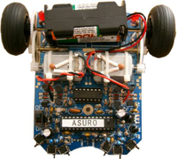

ASURO
Archivierte Anleitung
Dieser Artikel wurde archiviert, da er - oder Teile daraus - nur noch unter einer älteren Ubuntu-Version nutzbar ist. Diese Anleitung wird vom Wiki-Team weder auf Richtigkeit überprüft noch anderweitig gepflegt. Zusätzlich wurde der Artikel für weitere Änderungen gesperrt.
Zum Verständnis dieses Artikels sind folgende Seiten hilfreich:
 Der ASURO ist ein kleiner, frei in C programmierbarer Roboter, den man als Bausatz bei der Firma Arexx  kaufen kann. Der ASURO besitzt neben seinem RISC-Prozessor zwei Motoren, die unabhängig voneinander angesteuert werden können, eine optische Linienfolgeeinheit, sechs Kollisionstaster, zwei Drehzahlsensoren für die Räder, drei Leuchtdioden und eine Infrarot-Kommunikationseinheit. Er wurde vom Deutschen Zentrum für Luft- und Raumfahrt entwickelt und wird von Arexx produziert. Er ist besonders für Anfänger geeignet, weil er relativ einfach zusammen zu bauen und mit 50 € preisgünstig ist.
kaufen kann. Der ASURO besitzt neben seinem RISC-Prozessor zwei Motoren, die unabhängig voneinander angesteuert werden können, eine optische Linienfolgeeinheit, sechs Kollisionstaster, zwei Drehzahlsensoren für die Räder, drei Leuchtdioden und eine Infrarot-Kommunikationseinheit. Er wurde vom Deutschen Zentrum für Luft- und Raumfahrt entwickelt und wird von Arexx produziert. Er ist besonders für Anfänger geeignet, weil er relativ einfach zusammen zu bauen und mit 50 € preisgünstig ist.
Infrarotschnittstellen¶
Der ASURO wird mit dem PC über eine Infrarotschnittstelle verbunden, um Daten und Programme übertragen zu können. Im folgenden Absatz werden die beiden Kommunikationseinheiten erklärt und die Einrichtung unter Linux beschrieben.
Infrarot RS 232 Transceiver¶
Der serielle IR-Transceiver ist im Bausatz enthalten.
USB-IR-Transceiver¶
Der USB-Transceiver ist insbesondere für neuere Rechner ohne serielle Schnittstelle gedacht und ist nicht im Bausatz enthalten. Um den USB-Transceiver zu testen sind einige zusätzliche Schritte durchzuführen: Zuerst überprüft man, ob Linux den IR-Transceiver erkannt hat. Dazu gibt man diesen Befehl im Terminal [3] ein:
sudo cat /proc/tty/driver/usbserial
Die Ausgabe sollte in etwa so aussehen:
usbserinfo:1.0 driver:2.0 0: module:ftdi_sio name:"FTDI USB Serial Device" vendor:0403 product:6001 num_ports:1 port:1 path:usb-0000:00:0b.0-1
Man sollte sich die Zahl notieren, mit der die zweite Zeile beginnt (in diesem Fall "0").
Achtung!
Falls nur usbserinfo:1.0 driver:2.0 ausgegeben wird hilft es, das Programm brltty (ein Daemon, der Blinden das Benutzen des Terminals ermöglicht) zu deinstallieren.
Test des IR-Transceivers¶
Nun muss man das folgende Paket installieren:
cutecom (universe)
 mit apturl
mit apturl
Paketliste zum Kopieren:
sudo apt-get install cutecom
sudo aptitude install cutecom
Cutecom ist ein einfaches grafisches Programm, mit dem man die Schnittstellen konfigurieren und testen kann. Dieses startet man mit dem Befehl cutecom [4].
Dort stellt man Folgendes ein:
Device: /dev/ttyS0 (für den RS232-Transceiver) /dev/ttyUSB0 (für den USB-Transceiver oder /dev/ttyUSB1 falls die Zahl vorher 1 war)
Baud rate: 2400
Data bits: 8
Stop bits: 1
Parity: None
Handshake: Keine Häkchen
Open for: Häkchen bei "Reading" und "Writing"
Und ein Häkchen bei "Apply Settings when opening"
Dann auf "Open Device"  -klicken.
-klicken.
Nun kann man, wie in der Anleitung des ASURO beschrieben, den Transceiver testen, indem man ihn über ein Blatt Papier hält und ein paar Zeichen eingibt. Diese sollten dann im großen weißen Bereich zu sehen sein. Beim RS232 Transceiver muss eventuell etwas am Poti gedreht werden, bis die richtigen Zeichen wiedergegeben werden.
Experten-Info:
Man kann für die Einrichtung und den Test auch das rein textbasierte Programm minicom verwenden; da die Einrichtung aber erheblich einfacher mit Cutecom ist, wird hier nicht weiter darauf eingegangen.
Flashtool¶
Auf der CD sind zwei unterschiedliche Programme, die es ermöglichen, Dateien auf den ASURO zu übertragen.
Asurocon¶
Das Programm asurocon ist ein konsolenbasiertes Flashtool. Zum Starten muss man die Datei von der CD ins Verzeichnis /usr/local/bin kopieren und sie dann mithilfe des folgenden Befehls ausführbar machen.
chmod a+x ~/Asuroflash/asurocon
Zum Übertragen gibt man die Schnittstelle und den Pfad zu der kompilierten hex-Datei an.
asurocon /dev/ttyS0 ~/pfad/test.hex
Asuroflash¶
Im Gegensatz dazu hat das Programm asuroflash eine grafisches Oberfläche. Allerdings ist die Version auf der CD veraltet und sollte deshalb nicht mehr verwendet werde. Die Installation der neuesten überarbeiteten Version des Flashtools wird im Folgenden beschrieben. Die neue Version ist erheblich schneller und sicherer. Außerdem fügt sich die neue Version besser in den Gnome-Desktop ein.
Hinweis:
Falls man dennoch die Version von der CD unter Ubuntu installieren möchte, muss man wie bei dem Programm asurocon die Datei ausführbar machen. Außerdem benötigt man das Paket ia32-libs-kde.
Installation¶
Das Asuroflashtool benötigt die folgenden Pakete:
build-essential (main)
scons (main)
libgtkmm-2.4-dev (main)
mit apturl
Paketliste zum Kopieren:
sudo apt-get install build-essential scons libgtkmm-2.4-dev
sudo aptitude install build-essential scons libgtkmm-2.4-dev
Um das Flashtool zu installieren, lädt man zuerst das Paket asuroflash  in der neuesten Version als tar.bz2-Archiv herunter und entpackt [5] es. Nun öffnet man das Terminal und wechselt in das Verzeichnis des entpackten Paketes. Anschließend führt man den folgenden Befehl aus:
in der neuesten Version als tar.bz2-Archiv herunter und entpackt [5] es. Nun öffnet man das Terminal und wechselt in das Verzeichnis des entpackten Paketes. Anschließend führt man den folgenden Befehl aus:
sudo scons install
Mit dem aktuellsten Paket (Stand 28.12.2012) asuroflash-1.6.2.tar.bz2 wird unter Ubuntu 12.10 nach dem Aufruf von scons folgende Fehlermeldung ausgegeben:
/usr/include/glib-2.0/glib/gutils.h:28:2: error: #error "Only <glib.h> can be included directly."
Es muss dann die Datei AsuroFlash.cpp gepatcht werden. Dafür wird die Datei AsuroFlash.patch im Verzeichnis, in das das tar.bz2-Archiv entpackt wurde, gespeichert und anschließend folgender Befehl ausgeführt:
patch < AsuroFlash.patch
Danach sollte der Aufruf von scons funktionieren.
Nun kopiert man die erzeugte Datei asuroflash in das Verzeichnis /usr/local/bin/ und das Programm lässt sich nun mit der Eingabe von asuroflash starten.
Experten-Info:
Das Programm Asuroflash kann auch ohne grafische Benutzeroberfläche gestartet werden. Dazu gibt man Folgendes im Terminal ein: asuroflash /dev/ttyS0 test.hex Dieser Befehl würde das Programm test.hex über die erste serielle Schnittstelle übertragen.
Konfiguration¶
Falls das Flashen immer wieder mit Fehlermeldungen abbricht, hilft das Bearbeiten der Konfigurationsdatei asuroflash. Diese befindet sich im Homeverzeichnis im versteckten .config-Ordner. Sie wird mit einem Editor [4] geöffnet und bearbeitet.
Beispiel:
connect_timeout = 10 flash_timeout = 7 flash_retry = 10 ...
Der flash_timeout wurde hier von 5 auf 7 erhöht, wobei der flash_timeout nicht höher als der connect_timeout eingestellt werden sollte. Der flash_retry wurde von 5 auf 10 erhöht. Dies führt dazu, dass das Flashtool die doppelte Anzahl an Fehlversuchen ('c' bzw. 't') ausführt, bevor es endgültig mit einer Fehlermeldung abbricht.
ASURO-Programme kompilieren¶
Die Programme müssen für den Mikrocontroller des ASUROS kompiliert werden. Deshalb muss man den GNU Compiler für AVR-Prozessoren installieren.
Installation¶
Die RPM-Pakete auf der CD werden von Ubuntu nicht unterstützt; aber zum Glück findet man die Pakete in den universe-Paketquellen von Ubuntu und kann deshalb die Pakete ganz einfach über die Paketverwaltung installieren:
binutils-avr (universe )
gcc-avr (universe)
avr-libc (universe )
mit apturl
Paketliste zum Kopieren:
sudo apt-get install binutils-avr gcc-avr avr-libc
sudo aptitude install binutils-avr gcc-avr avr-libc
Sollte man vorher schon die alten Versionen (von der ASURO-CD) mit Alien in ein .deb-Paket konvertiert und installiert haben, zeigt einem die Aktualisierungsverwaltung die neuen Versionen an, bei einer Installation dieser Aktualisierungen kommt es aber zu kaputten Abhängigkeiten. Mann muss also vorher alle alten Pakete, die einen umgedrehten Namen haben (also z.B. avr-binutils statt binutils-avr) deinstallieren:
sudo apt-get remove avr-binutils avr-gcc avr-libc
Dann kann man ohne Probleme die neuen Pakete in der richtigen Reihenfolge installieren (siehe oben).
Eigene Programme kompilieren¶
Man muss sich, wie im Handbuch beschrieben, die Beispieldateien aus dem Ordner ASURO_src/FirstTry/ von der CD in das Homeverzeichnis kopieren. Nun wechselt man im Terminal in dieses Verzeichnis und kompiliert die Datei test.c, indem man ins Terminal Folgendes eingibt:
make all
Dadurch wird test.c in test.hex übersetzt, welches man dann mit dem Flashtool auf den ASURO übertragen kann. Dann kann man die Datei test.c mit einem beliebigen Editor [5] ändern. In der Anleitung werden die Grundlagen der C-Programmierung und die wichtigsten Funktionen, um den ASURO zu programmieren, erklärt.
- Erstellt mit Inyoka
-
 2004 – 2017 ubuntuusers.de • Einige Rechte vorbehalten
2004 – 2017 ubuntuusers.de • Einige Rechte vorbehalten
Lizenz • Kontakt • Datenschutz • Impressum • Serverstatus -
Serverhousing gespendet von